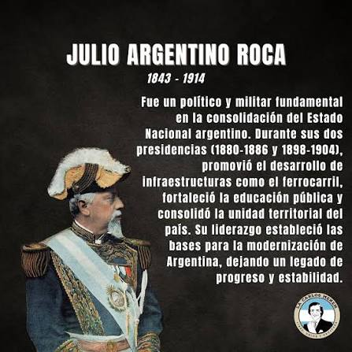

Un legado con múltiples dimensiones
Roca dejó una huella importante en la política argentina. Sus gobiernos estuvieron relacionados con la consolidación del Estado, la expansión de infraestructura, la educación y la organización de territorios nacionales. Al mismo tiempo, su figura está asociada a campañas militares contra pueblos originarios y a un modelo político que concentró poder en el Estado nacional.
Por eso, su legado no puede resumirse solamente como positivo o negativo. Estudiarlo permite comprender cómo las decisiones de un período pueden producir beneficios para algunos sectores y consecuencias graves para otros.
Monumentos, calles y homenajes
El nombre de Roca aparece en calles, localidades, instituciones y monumentos de distintas partes del país. Estos homenajes forman parte de la memoria pública, pero también generan debates sobre qué personajes se homenajean y cómo se representan procesos históricos complejos.
Curiosidades
- Roca nació en Tucumán en 1843 y murió en Buenos Aires en 1914.
- Fue presidente de la Nación en dos períodos.
- Su padre fue el coronel José Segundo Roca.
- Durante su segundo gobierno se desarrollaron los acuerdos conocidos como Pactos de Mayo con Chile.
- El Museo Casa Rosada conserva documentación y materiales vinculados con su trayectoria.
Frases y documentos
En lugar de atribuir frases sin contexto, es más seguro trabajar con discursos y documentos históricos completos. El Museo Casa Rosada dispone, entre otros materiales, de un discurso presidencial de Roca de 1882.
Ver material oficial sobre RocaGalería



Conclusión
Estudiar a Julio Argentino Roca permite observar un momento decisivo de la historia argentina: la consolidación del Estado nacional y la transformación del territorio. También obliga a reconocer que la construcción de un Estado tuvo conflictos y costos humanos. La mejor forma de acercarnos a esta etapa es comparar fuentes y escuchar las distintas perspectivas que existen sobre el pasado.
← Volver a Inicio